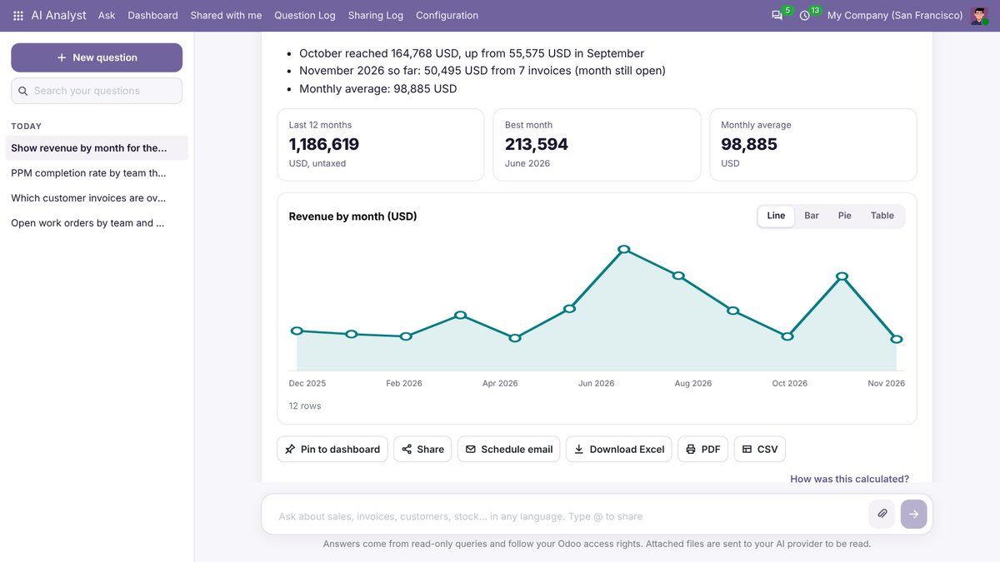
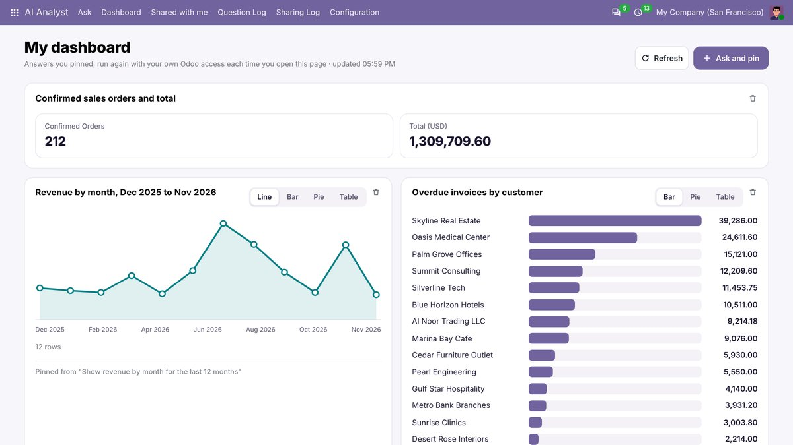
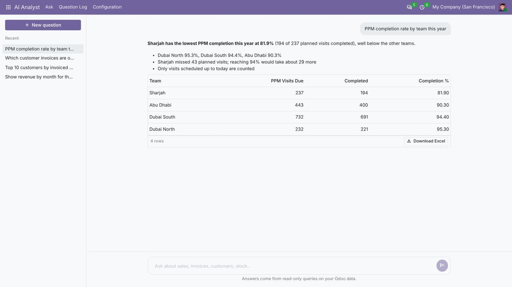

AI Analyst
Ask. Analyze. Get Answers.
Odoo Apps StoreOdoo 12 · 14 · 16 · 17 · 18 · 19 · 20Version 1.2Python · OWL · PostgreSQLClaude · Gemini · OpenAI
The problem
While building a PPM analysis report for management, I saw how long every new report took: requirement, development, testing, release. Each new question started the cycle again.
What I built
An AI agent inside Odoo. People type a question in plain English or Arabic and get the key figures, a chart and a table from live data in standard and custom modules. Version 1.2 adds a live dashboard, sharing with colleagues, scheduled email reports, questions about attached PDF, Excel and Word files, and print-ready PDF reports.
The result
Reports in a few clicks instead of days or weeks of development, with no risk to the data: every query is read-only and every question is logged.



How it works
- Tool-calling agent loop with native support for Anthropic, Google Gemini and OpenAI, including retries and model checks.
- Finds the right tables itself from Odoo's own field labels, so it understands custom modules without setup.
- Safety in layers: separate read-only PostgreSQL connection, statement timeouts, a SELECT-only check and blocked sensitive tables.
- Every answer follows the asking person's own Odoo access: access rights, record rules and allowed companies. Shared answers and scheduled reports run again as each recipient. Sending a copy of exactly what you see is a manager-only choice, and every copy is logged.
- One codebase released for seven Odoo versions, 12 to 20, including the legacy web client on 12 and 14 and the Owl interface on 16 to 20.
- Tested on every version: 224 automated security checks and 38 browser tests before each release.
- Excel, PDF and CSV downloads, scheduled email reports, and a full question and sharing log for administrators.